정보처리산업기사 (2003-08-31 기출문제)
1과목: 데이터 베이스
1. SQL 언어에 포함되는 기능이 아닌 것은?
- DCL
- DDL
- DQL
- DML
(정답률: 77%)

2. 노드의 삽입 작업은 선형리스트의 한쪽 끝에서, 제거 작업은 다른 쪽 끝에서 수행되는 자료구조는?
- 스택
- 큐
- 트리
- 그래프
(정답률: 80%)
3. 개체 집합에 대한 속성 관계를 표시하기 위해 개체를 노드로 표현하고 개체 집합들 사이의 관계를 링크로 연결한 트리(tree) 형태의 자료구조 모델은?
- 망 데이터 모델
- 계층 데이터 모델
- 관계 데이터 모델
- 객체 지향 데이터 모델
(정답률: 56%)
4. 데이터 제어어(DCL)의 역할이 아닌 것은?
- 불법적인 사용자로부터 데이터를 보호하기 위한 데이터 보안
- 데이터 정확성을 위한 무결성
- 시스템 장애에 대비한 데이터 회복과 병행 수행
- 데이터의 검색, 삽입, 삭제, 변경
(정답률: 64%)
5. 내부 정렬 기법(Internal sorting)이 아닌 것은?
- 히프 정렬(heap sort)
- 기수 정렬(radix sort)
- 진동 병합정렬(oscillating merge sort)
- 선택 정렬(selection sort)
(정답률: 69%)
6. 관계에 존재하는 튜플에서 선택조건을 만족하는 튜플의 부분 집합을 구하기 위해서 사용하는 관계 대수 연산은?
- JOIN
- SELECT
- PROJECT
- UNION
(정답률: 51%)
7. 데이터 모델링의 과정을 올바른 순서로 나타낸 것은?
- 개체정의 → 상세화 → 식별자 정의 → 통합 → 검증
- 개체정의 → 식별자 정의 → 상세화 → 통합 → 검증
- 식별자 정의 → 개체정의 → 상세화 → 통합 → 검증
- 식별자 정의 → 상세화 → 개체정의 → 통합 → 검증
(정답률: 50%)
8. 관계데이터 모델에서 참조무결성(referential integrity)에 대한 설명이다. 괄호 안의 내용으로 옳은 것은?
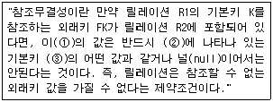
- ① R1 ② R2 ③ K
- ① K ② R1 ③ K
- ① FK ② R1 ③ K
- ① FK ② R2 ③ K
(정답률: 56%)
9. 삽입 SQL에 대한 설명으로 옳지 않은 것은?
- 삽입 SQL 실행문은 호스트 실행문이 나타날 수 있는 곳이면, 어디에서나 사용 가능하다.
- SQL문에 사용되는 호스트 변수는 콜론(:)을 앞에 붙인다.
- 응용 프로그램에서 삽입 SQL문은 'EXEC SQL'을 앞에 붙여 다른 호스트 명령문과 구별한다.
- 삽입 SQL문의 호스트 변수의 데이터 타입은 이에 대응하는 데이터베이스 필드의 SQL 데이터 타입과 일치하지 않아도 된다.
(정답률: 65%)
10. 색인 순차 파일(Indexed Sequential Access Method file)의 인덱스에 해당하지 않는 것은?
- master 인덱스
- prime 인덱스
- cylinder 인덱스
- track 인덱스
(정답률: 72%)
11. The explanation below is about a method of sort. What is that?
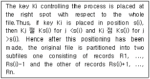
- insertion sort
- 2-way merge sort
- quick sort
- heap sort
(정답률: 24%)
12. 다음은 무엇에 대한 설명인가?
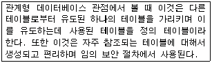
- Catalog
- View
- SQL
- Schema
(정답률: 73%)
13. 개체-관계 모델(E-R 모델)에 대한 설명으로 옳지 않은 것은?
- 개체 타입과 관계 타입을 이용해서 현실 세계를 개념적으로 표현하는 방법이다.
- E-R 다이어그램은 E-R 모델을 그래프 방식으로 표현한 것이다.
- E-R 다이어그램의 다이아몬드 형태는 관계 타입을 표현하며 연관된 개체 타입들을 링크로 연결한다.
- 현실세계의 자료가 데이터베이스로 표현될 수 있는 물리적 구조를 기술하는 것이다.
(정답률: 57%)
14. 일괄 처리 방식을 적용한 업무 형태로서 부적합한 것은?
- 급여 계산
- 회계 마감업무
- 세무 처리
- 예약 업무
(정답률: 80%)
15. 입력 순서에 따라 배열된 5개의 데이터 (8, 3, 5, 2, 4)를 어떠한 정렬방식에 의해 1단계 정렬시킨 결과가 2-8-5-3-4가 되었다면 사용된 정렬 알고리즘은?
- bubble sort
- heap sort
- selection sort
- insertion sort
(정답률: 45%)
16. 데이터베이스 설계 순서를 바르게 나열한 것은?
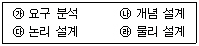
- 가-나-다-라
- 가-다-나-라
- 다-나-라-가
- 다-라-나-가
(정답률: 87%)
17. 다음 그림과 같은 이진트리를 전위(preorder) 순회한 결과는?
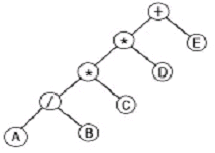
- AB*CD*E/+
- A*B+C*D/E
- +**/ABCDE
- A*B+CD*/E
(정답률: 81%)
18. 다음은 무엇에 관한 설명인가?
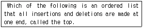
- Array
- Stack
- Queue
- Binary Tree
(정답률: 78%)
19. 데이터베이스 관리자의 역할로 거리가 먼 것은?
- 개념 및 내부스키마 정의
- 변화 요구에 대한 적응과 성능 향상에 대한 감시
- 백업 및 회복 전략 정의
- 데이터베이스 자원 활용 및 사용자의 인터페이스 제공
(정답률: 43%)
20. 트랜잭션(transaction)의 특성에 대한 설명으로 옳지 않은 것은?
- 원자성(Atomicity)은 트랜잭션의 일부만 수행된 상태로 종료될 수 있다는 특성을 의미한다.
- 일관성(Consistency)은 시스템의 고정요소는 트랜잭션 수행 전과 수행 완료 후에 같아야 한다는 특성을 의미한다.
- 고립성(Isolation)은 트랜잭션이 실행될 때마다 다른 트랜잭션의 간섭을 받지 않아야 한다는 성질을 의미한다.
- 지속성(Duration)은 트랜잭션의 완료 결과가 데이터베이스에 영구히 기억되는 성질을 의미한다.
(정답률: 64%)
2과목: 전자 계산기 구조
21. 인터럽트를 발생하는 장치들을 직렬로 연결하는 하드웨어적인 우선순위 제어 방식은?
- interface
- daisy chain
- polling
- DMA
(정답률: 59%)
22. 기억된 프로그램(program)을 하나하나 불러내어 명령을 해독하는 장치는?
- 입력장치
- 제어장치
- 연산장치
- 기억장치
(정답률: 56%)
23. 캐시(cache) 메모리는 주기억 장치의 액세스 타임과 프로세서 논리회로와의 ( )차이를 줄이기 위하여 쓰인다. ( )안에 들어갈 올바른 내용은?
- 지연 시간
- 설정 시간
- 구조
- 속도
(정답률: 69%)
24. ROM IC의 특징을 설명한 것 중 옳지 않은 것은?
- Mask ROM : 반도체 공장에서 내용이 기입된다.
- PROM : PROM writer로 기입되고 내용을 지울 수 없다.
- EPROM : 자외선을 조사하면 내용을 지울 수 있다.
- EAROM : refresh 회로가 필요하다.
(정답률: 44%)
25. 여러 개의 범용 레지스터를 가진 컴퓨터에 사용되며, 연산 후에 입력 자료가 변하지 않고 보존되는 인스트럭션의 형식은?
- 0주소 인스트럭션의 형식
- 1주소 인스트럭션의 형식
- 2주소 인스트럭션의 형식
- 3주소 인스트럭션의 형식
(정답률: 49%)
26. 10진수 634를 BCD code로 표현하였을 때 옳은 것은?
- 0110 0011 0100
- 0110 0011 0011
- 0011 0011 0100
- 0011 0011 0011
(정답률: 77%)
27. 다음과 같은 명령어의 기능은?
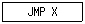
- 제어 기능
- 함수 연산 기능
- 전달 기능
- 입ㆍ출력 기능
(정답률: 49%)
28. 프로그램 카운터가 명령의 번지 부분과 더해져서 유효 번지가 결정되는 주소 지정 방식은?
- 상대 번지 모드(mode)
- 간접 번지 모드 (mode)
- 인덱스 어드레싱 모드(indexed addressing mode)
- 베이스(base) 레지스터 어드레싱 모드
(정답률: 45%)
29. 메인메모리의 용량이 1024K×24bit 일 때 MAR와 MBR 길이는 몇 비트인가?
- MAR=20, MBR=20
- MAR=20, MBR=24
- MAR=24, MBR=20
- MAR=24, MBR=24
(정답률: 66%)
30. 병렬 우선순위 인터럽트에 대한 설명이 옳지 않은 것은?
- 마스크 레지스터(mask register)를 갖고 있다.
- 우선순위는 레지스터의 bit의 위치에 따라서 결정될 수 있다.
- 마스크 레지스터는 우선순위가 높은 것이 서비스 받고 있을 때 우선순위가 낮은 것을 비활성화 시킬 수 있다.
- 마스크 레지스터는 우선순위가 낮은 것이 서비스 받고 있을 때 우선순위가 높은 것이 CPU에 인터럽트를 요청할 수 없도록 한다.
(정답률: 65%)
31. 다음 주변장치 중 입력장치가 아닌 것은?
- 스캐너(scanner)
- 프린터(printer)
- 디지타이저(digitizer)
- 키보드(keyboard)
(정답률: 72%)
32. 에러(error)를 검출 및 교정을 할 수 있는 코드는?
- BCD
- ASCII
- Hamming Code
- Excess-3 Code
(정답률: 79%)
33. 아래 논리식을 최소화 한 것은?
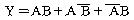
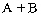
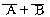
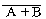
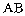
(정답률: 40%)
34. ASCII 코드를 사용하여 통신을 할 때 몇 개의 패리티 비트를 추가하여 통신하는가?
- 1 비트
- 2 비트
- 3 비트
- 0 비트
(정답률: 62%)
35. 다음과 같은 마이크로 동작은 어떠한 명령의 수행 과정을 나타내는 것인가?
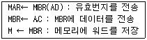
- load to AC(accumulator)
- branch unconditionally
- AND to AC
- store AC
(정답률: 42%)
36. 컴퓨터가 프로그램을 수행하는 동안 컴퓨터 내부나 주위에서 응급 사태가 발생하여 현재 수행되는 프로그램이 일시적으로 중지되는 상태는?
- break
- stop
- pause
- interrupt
(정답률: 75%)
37. 인터럽트 발생시에 반드시 보존되어야 하는 레지스터는?
- MAR
- Stack
- PC
- MBR
(정답률: 62%)
38. 음수를 표시하는 방법이 아닌 것은?
- 1의 보수(1's Complement)
- 부호 및 크기(Signed Magnitude)
- 2의 보수(2's Complement)
- 10의 보수(10's Complement)
(정답률: 64%)
39. 다음 회로의 출력 f가 0이 되기 위한 조건은?
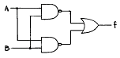
- A=0, B=0
- A=0, B=1
- A=1, B=0
- A=1, B=1
(정답률: 52%)
40. 전자계산기를 이용하기 위하여 사용하는 언어를 크게 3가지의 계층으로 구분할 수 있다. 이에 관계없는 것은?
- 레지스터
- 기계어
- 어셈블리어
- 컴파일러
(정답률: 64%)
3과목: 시스템분석설계
41. 시스템의 기본 요소와 거리가 먼 것은?
- 입력과 출력
- 처리
- 제어
- 상호의존
(정답률: 75%)
42. 코드의 3대 기능으로 거리가 먼 것은?
- 정렬
- 식별
- 분류
- 배열
(정답률: 40%)
43. 구조적 분석에서 자료사전(data dictionary) 작성시 고려 사항으로 거리가 먼 것은?
- 이름이 중복되어야 한다.
- 갱신하기 쉬워야 한다.
- 이름을 가지고 정의를 쉽게 찾을 수 있어야 한다.
- 정의하는 방식이 명확해야 한다.
(정답률: 79%)
44. 램보우(Rumbaugh)의 객체지향분석 모델링에서 데이터 흐름 다이어그램을 이용하여 다수의 프로세스들 간의 데이터 흐름을 중심으로 처리과정을 표현한 모델링은?
- 동적 모델링
- 기능 모델링
- 클래스 모델링
- 객체 모델링
(정답률: 18%)
45. 출력정보의 설계 순서가 올바른 것은?
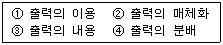
- ①-②-③-④
- ①-③-②-④
- ③-②-④-①
- ②-④-①-③
(정답률: 58%)
46. HIPO 패키지의 3단계 다이어그램에 해당하지 않는 것은?
- Visual table of contents
- Overview diagram
- Detail diagram
- Table diagram
(정답률: 39%)
47. 문서화(Documentation)의 목적에 대한 설명으로 거리가 먼 것은?
- 개발 후 시스템 유지 보수의 용이
- 시스템 개발 중 추가 변경에 따른 혼란 방지
- 실수에 대한 책임의 명확화
- 시스템의 개발 요령과 순서를 표준화하여 보다 효율적 작업 도모
(정답률: 75%)
48. 시스템 설계시 필요한 과정의 나열이 순서에 옳은 것은?
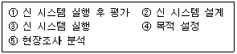
- ②->⑤->④->③->①
- ⑤->④->②->③->①
- ④->⑤->②->③->①
- ②->⑤->④->①->③
(정답률: 57%)
49. 입력 정보 설계 순서를 올바르게 나타낸 것은?
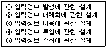
- ①-②-③-④-⑤
- ①-④-⑤-③-②
- ①-⑤-②-④-③
- ①-④-⑤-③-②
(정답률: 74%)
50. HIPO 기법에 대한 설명으로 옳지 않은 것은?
- 체계화된 문서 작성이 가능하다.
- 상향식(bottom-up) 개발이 용이하다.
- 유지 보수 및 변경이 용이하다.
- 도표 상에 기능 위주로 입력 내용, 처리 방법, 출력 내용이 제시되므로 시스템의 이해가 쉽다.
(정답률: 64%)
51. 시스템 개발 주기를 폭포수형(Waterfall model)으로 표현할 때 그 순서가 옳은 것은?
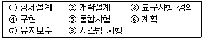
- ③⑥②①④⑤⑧⑦
- ⑥③②①④⑤⑧⑦
- ⑥②③①⑤④⑧⑦
- ③⑥④②①⑤⑧⑦
(정답률: 36%)
52. 마스터 파일(master file) 안의 정보 변동에 의해 추가, 삭제, 교환을 하고 새로운 내용의 마스터 파일을 작성하는 것을 무엇이라 하는가?
- 병합(merge)
- 매칭(matching)
- 변환(conversion)
- 갱신(update)
(정답률: 71%)
53. 하나 이상의 유사한 객체들을 묶어서 하나의 공통된 특성을 표현한 객체 지향의 요소는?
- 객체(object)
- 클래스(class)
- 실체(instance)
- 메시지(message)
(정답률: 77%)
54. 객체의 외부적인 활동을 연산이라는 전제 하에서 구현한 것은?
- 메시지
- 속성
- 메소드
- 추상화
(정답률: 63%)
55. 마스터 파일을 갱신하거나 조회하기 위하여 만들어진 파일은?
- 히스토리 파일(history file)
- 트레일러 파일(trailer file)
- 트랜잭션 파일(transaction file)
- 원시 파일(source file)
(정답률: 65%)
56. 해싱에서 동일한 버켓 주소를 갖는 레코드들의 집합을 의미하는 것은?
- collision
- division
- chaining
- synonym
(정답률: 66%)
57. 시스템의 정의와 가능성 조사 및 다른 방법과 비교 조사하는 시스템 개발 수명 주기에 해당하는 것은?
- 타당성 조사
- 요구분석
- 코딩
- 운영 및 유지보수
(정답률: 50%)
58. 프로세스 입력 단계에서의 체크 중 입력 정보의 특정항목 합계 값을 미리 계산해서 이것을 입력정보와 함께 입력하고 컴퓨터상 에서 계산한 결과와 수동 계산결과가 같은지를 체크하는 것은?
- 순차 체크(sequence check)
- 범위 체크(limit check)
- 균형 체크(balance check)
- 일괄 합계 체크(batch total check)
(정답률: 51%)
59. 코드의 기입 과정에서 원래는 1996으로 기입되어야 하는데 오기를 하여 1969로 표기되었을 경우 어느 Error에 해당하는가?
- Transcription Error
- Transposition Error
- Double Transposition Error
- Random Error
(정답률: 75%)
60. 코드화 대상 항목의 길이, 넓이, 부피, 무게 등을 나타내는 문자, 숫자 혹은 기호를 그대로 코드로 사용하는 코드는?
- 그룹 분류식 코드(Group Classification Code)
- 기호 코드(Mnemonic Code)
- 표의 숫자식 코드(Significant digit Code)
- 합성 코드(Combined Code)
(정답률: 61%)
4과목: 운영체제
61. 스케쥴링, 기억장치 관리, 파일 관리, 시스템 호출 인터페이스 등의 기능을 제공하는 유닉스 시스템의 핵심 부분은?
- Shell
- Kernel
- IPC
- Filter
(정답률: 62%)
62. 주기억장치 관리기법 중 최적기법 이용시 20K 크기의 프로그램은 그림의 주기억장치 분할장소 중 어느 곳에 할당되는가?
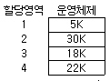
- 1
- 2
- 3
- 4
(정답률: 66%)
63. UNIX에서 명령의 백그라운드 처리를 위해 명령의 끝에 입력하는 것은?
- *
- %
- &
- $
(정답률: 47%)
64. 둘 이상의 프로세스들이 서로 다른 프로세스가 차지하고 있는 자원을 요구하며 무한정 기다리게 되어 해당 프로세스들의 진행이 중단되는 현상을 무엇이라 하는가?
- semaphore
- waiting
- synchronization
- deadlock
(정답률: 61%)
65. 분산 시스템의 특징 및 장점에 속하지 않는 것은?
- 시스템 설계의 단순성
- 시스템의 확장성
- 시스템 자원 공유
- 가용도의 증가
(정답률: 73%)
66. Process Control Block(PCB)의 내용이 아닌 것은?
- 프로세스의 현재 상태
- 프로세스 식별자
- 프로세스의 우선순위
- 페이지부재 발생 횟수
(정답률: 60%)
67. 세마포어(semaphore)에 관한 설명 중 옳지 않은 것은?
- 상호배제 문제를 해결하기 위하여 사용된다.
- 정수의 변수로서 양의 값만을 가진다.
- 여러 개의 프로세스가 동시에 그 값을 수정하지 못한다.
- 세마포어에 대한 연산은 처리 도중에 인터럽트 되어서는 안 된다.
(정답률: 48%)
68. 선점형 스케줄링에 해당하지 않는 것은?(문제오류로 다, 라번이 정답 처리된 문제입니다. 여기서는 다번을 정답 처리 합니다.)
- RR(Round-Robin)
- SRT(Short Remaining Time)
- FIFO(First-In-First-Out)
- SJF(Shortest Job First)
(정답률: 68%)
69. 페이지 교체 기법 중 가장 오랫동안 사용되지 않은 페이지를 교체하는 기법은?
- FIFO
- LRU
- LFU
- NUR
(정답률: 51%)
70. 모니터에 대한 설명으로 옳지 않은 것은?
- 한 순간에 둘 이상의 프로세스가 모니터에 들어갈 수 있다.
- 모니터의 경계에서 상호 배제가 시행된다.
- 모니터 외부의 프로세스는 모니터 내부의 데이터에 접근할 수 없다.
- 특정 공유 자원이나 한 그룹의 공유 자원을 할당하는데 필요한 데이터 및 프로시저를 포함하는 병행성 구조이다.
(정답률: 53%)
71. 로더의 기능에 해당되지 않는 것은?
- allocation
- linking
- relocation
- compile
(정답률: 55%)
72. 프로세스가 기억장치내의 일부분만을 집중적으로 사용하는 것을 구역성(locality)이라 한다. 시간 구역성과 관련이 적은 것은?
- looping
- array traverse
- stack
- subprogram
(정답률: 31%)
73. RR(Round-Robin) 스케줄링 기법에서 시간 할당량이 대부분의 작업을 완료할 만큼 길다면 다음의 어느 기법과 비슷한 결과를 얻게 되는가?
- FIFO
- SJF
- HRN
- SRT
(정답률: 65%)
74. 어떤 프로세스가 계속적으로 페이지부재가 발생하여 프로세스의 처리시간 보다 페이지 교체 시간이 더 많아지는 현상을 무엇이라고 하는가?
- 워킹 세트(working set)
- 스래싱(thrashing)
- 프리 페이징(free paging)
- 스와핑(swapping)
(정답률: 68%)
75. CPU 스케쥴링 알고리즘을 선택할 때 고려해야 할 사항으로 옳은 것은?
- 처리율은 최소화하고 반환시간은 최대화한다.
- 대기시간, 응답시간, 반환시간 모두를 최대화한다.
- CPU 이용율은 최소화하고 응답시간은 최대화한다.
- CPU 이용율과 처리율을 최대화한다.
(정답률: 64%)
76. 운영체제 처리 방법의 발전 순서로 옳은 것은?
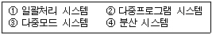
- ①-②-③-④
- ①-③-②-④
- ③-①-②-④
- ④-③-①-②
(정답률: 41%)
77. 가변분할 다중 프로그래밍 시스템에서 인접한 공백들을 더 큰 하나의 공백으로 합하는 과정을 무엇이라 하는가?
- 기억장소의 페이징(paging)
- 기억장소의 통합(coalescing)
- 기억장소의 집약(compaction)
- 기억장소의 단편화(fragmentation)
(정답률: 63%)
78. HRN(Highest Response-Ratio Next) 스케줄링 기법에서 가변적 우선순위는 다음 식으로 계산된다. (ㄱ), (ㄴ)에 알맞은 내용은?
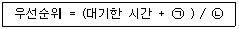
- (ㄱ) 서비스를 받을 시간 (ㄴ) 서비스를 받을 시간
- (ㄱ) 서비스를 받을 시간 (ㄴ) 실행된 시간
- (ㄱ) 실행된 시간 (ㄴ) 서비스를 받을 시간
- (ㄱ) 응답시간 (ㄴ) 서비스를 받을 시간
(정답률: 77%)
79. 파일의 편성 방식 중 해싱 기법과 가장 연관이 많은 파일은?
- 순차파일
- 직접파일
- 색인파일
- 색인순차파일
(정답률: 32%)
80. 분산처리 시스템에서 사용자나 응용 프로그램의 동작에 영향을 받지 않고 시스템 내에 있는 정보 객체를 이동할 수 있도록 하는 투명성(Transparency)은?
- 고장 투명성
- 이주 투명성
- 성능 투명성
- 규모 투명성
(정답률: 64%)
5과목: 정보통신개론
81. 모뎀(MODEM)의 주요 기능은?
- 디지털 신호를 아날로그 신호로 변환시킨다.
- 데이터 전송속도를 변환시킨다.
- 디지털 신호를 디지털 데이터로 변환시킨다.
- 아날로그 신호를 아날로그 데이터로 변환시킨다.
(정답률: 55%)
82. 다음 중 ISDN(Intergrated Service Digital Network)에 관한 설명으로 옳지 않은 것은?
- 음성, 화상, 데이터 등을 별개의 통신망으로 서비스되고 있는 것을 하나의 디지털 통신망에 통합처리하려는 목적에서 발전되고 있다.
- 기존의 회선교환 망이나 패킷교환망도 이용 가능하다.
- 서비스 기능은 하위계층인 베어러 서비스와 상위계층인 텔레서비스를 모두 포함한다.
- 공중전기통신망인 PSTN과 PSDN에서 제공하는 통신서비스는 제외한다.
(정답률: 49%)
83. 통신규약(protocol)의 설명으로 가장 적합한 것은?
- 통신용 하드웨어 구성에 대한 표준
- 네트워크 시스템(Network System)에 대한 운용지침
- 정보통신매체(Communication channel)에 대한 표준
- 통신을 제어하기 위한 표준적인 규칙과 절차의 집합
(정답률: 55%)
84. 다음 중 컴퓨터 네트워크에서 논리구조를 구성하는 기본 요소로서 거리가 먼 것은?
- 사용자 프로세스(user process)
- 케이블(cable)
- 노드(node)
- 링크(link)
(정답률: 45%)
85. 고속데이터 전송에 이용되며, 주로 9600[bps]의 속도에서 운용되는 변조방식은?
- ASK(진폭편이변조)
- FSK(주파수편이변조)
- APK(진폭위상변조)
- QAM(직교진폭변조)
(정답률: 43%)
86. 통신망(network)을 구축하여 얻을 수 있는 장점이 아닌 것은?
- 하드웨어 및 소프트웨어 자원의 공용화
- 배치(batch)처리 및 보안성 유지 간편
- 부하의 분산 및 효율성 향상
- 데이터베이스 공용 및 시차의 활용
(정답률: 55%)
87. LAN(Local Area Network)의 설명이 잘못된 것은?
- 광대역 전송매체의 사용으로 고속통신이 가능하다.
- 네트워크내의 접속기기 간에 전송이 가능하다.
- 최단거리 경로선택이 필요하다.
- 확장성과 재배치성이 좋다.
(정답률: 41%)
88. 데이터 단말장치와 데이터 회선종단장치의 전기적, 기계적 인터페이스는?
- ADSL
- DSU
- SERVER
- RS-232C
(정답률: 56%)
89. ISDN 채널에서 D 채널의 용도는?
- 음성채널
- 사용자 서비스를 위한 채널
- 서비스 제어를 위한 채널과 저속의 패킷전송 채널
- 예비채널
(정답률: 45%)
90. 다음 중 LAN의 전송매체로 전송특성이 가장 좋은 것은?
- 동축케이블
- UTP 쌍연 케이블
- 광케이블
- 폼 스킨 케이블
(정답률: 71%)
91. 시작 비트 1개, 정지 비트 1개, 패리티 비트 1개를 포함하는 아스키(ASCII)코드를 1200[bps]의 전송속도로 보낼 때 1초에 전송되는 문자수는?
- 109
- 120
- 133
- 150
(정답률: 56%)
92. 정보의 특성을 설명한 것 중 거리가 먼 것은?
- 정보는 가공되지 않은 데이터로부터 얻어진다.
- 정보는 일정한 시간이 흐르면 효력이 감소한다.
- 연속적인 정보활동과 축적으로 정보가치가 줄어든다.
- 정보는 사람에 따라 중요도가 달라질 수 있다.
(정답률: 43%)
93. 정보센터로부터 필요한 정보를 선택하여 공중전화망을 통해 일반 TV로 수신 가능한 뉴미디어는?
- 텔리텍스
- 전자우편
- 비디오텍스
- 원격전자회의
(정답률: 46%)
94. 데이터 전송 시스템에서의 통신방식의 종류가 아닌 것은?
- 단방향 통신방식
- 반이중 통신방식
- 복이중 통신방식
- 전이중 통신방식
(정답률: 68%)
95. 정보통신 시스템의 특징에 대한 설명 중 틀린 것은?
- 통신회선을 효율적으로 이용 가능함
- 고성능의 에러제어 방식을 사용하여 시스템 신뢰도가 높음
- 협대역 전송에만 주로 사용함
- 고품질의 통신서비스를 제공함
(정답률: 69%)
96. ITU-T 권고 시리즈의 의미가 잘못 설명된 것은?
- I시리즈 : ISDN의 표준화
- X시리즈 : 사설 데이터망을 통한 데이터 전송
- V시리즈 : 공중전화망을 통한 데이터 전송
- T시리즈 : 텔레마틱 단말에 관련된 권고
(정답률: 41%)
97. 비동기식(asynchronous) 데이터전송방식에 관한 설명으로 적당하지 않은 것은?
- 저속도의 전송에 적합하다.
- 문자의 앞쪽에 Start bit가 위치한다.
- 문자의 뒤쪽에 1-2개의 Stop bit를 갖는다.
- 캐릭터와 캐릭터 사이에 휴지시간이 없다.
(정답률: 60%)
98. 다음 중 LAN의 기본적인 회선 망 형태가 아닌 것은?
- 스타형
- 버스형
- 베이스밴드형
- 링형
(정답률: 67%)
99. 다음 중 정보를 정확하게 전송하기 위한 통신 프로토콜의 기능과 거리가 먼 것은?
- 다중화
- 에러 제어
- 동기화
- 흐름 제어
(정답률: 50%)
100. 멀티미디어의 표준화와 관련하여 MPEG란 다음 중 무엇을 의미하는가?
- 음성 압축표준
- 팩시밀리 압축표준
- 동화상 압축표준
- 문자 메시지 압축표준
(정답률: 62%)